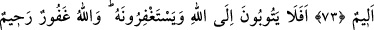
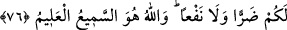

HZ. İSA İLE İLGİLİ BÂTIL İNANÇLAR
72. Andolsun ki “Allah ancak Meryem oğlu Mesîh’tir” diyenler kâfir olmuşlardır.
Halbuki Mesîh demişti ki “Ey İsrâiloğulları! Rabbim ve Rabbiniz olan Allah’a
kulluk edin. Kim Allah’a ortak koşarsa muhakkak Allah ona cenneti haram kılar ve
onun varacağı yer ateştir; zâlimlerin yardımcıları yoktur.”
73. Andolsun “Allah, üçün üçüncüsüdür” diyenler elbette kâfir olmuşlardır.
Halbuki yalnız bir tek Tanrı vardır. Eğer bu dediklerinden vazgeçmezlerse, elbette
onlardan inkâr edenlere acı bir azap dokunacaktır.
74. Hâlâ Allah’a tevbe edip O’ndan af dilemiyorlar mı? Allah çok bağışlayan ve
esirgeyendir.
75. Meryem oğlu Mesîh ancak bir rasûldür. Ondan önce de rasûller gelip
geçmiştir. Anası da dosdoğru bir kadındır. Her ikisi de yemek yerlerdi. Bak, onlara
delilleri nasıl açıklıyoruz, sonra bak nasıl yüz çeviriyorlar?
76. De ki: Allah’ı bırakıp da size ne zarar, ne de fayda vermeye gücü yetmeyen
şeylere mi tapıyorsunuz? Hakkıyla işiten ve bilen yalnız Allah’tır.
“Andolsun ki ‘Allah ancak Meryem oğlu Mesih’tir’ diyenler kâfir olmuşlardır.” Bu
âyet Necran hristiyanları hakkında inmiştir. Bunlar daha önce bahsedilen (bk. Âl-i
İmrân, 3/59) Ya’kûbiyye mezhebine mensup olan Seyyid, Âkıb ve bunlarla berâber
heyet hâlinde Medîne’ye, Peygamberimiz’in yanına gelen bir topluluktur. Onlar: “Allah,
Îsâ’nın zâtına hulûl etmiş ve onun zâtıyla birleşmiştir.” diyorlardı. Hâşâ, yüce Allah bu
gibi iftiralardan münezzehtir.